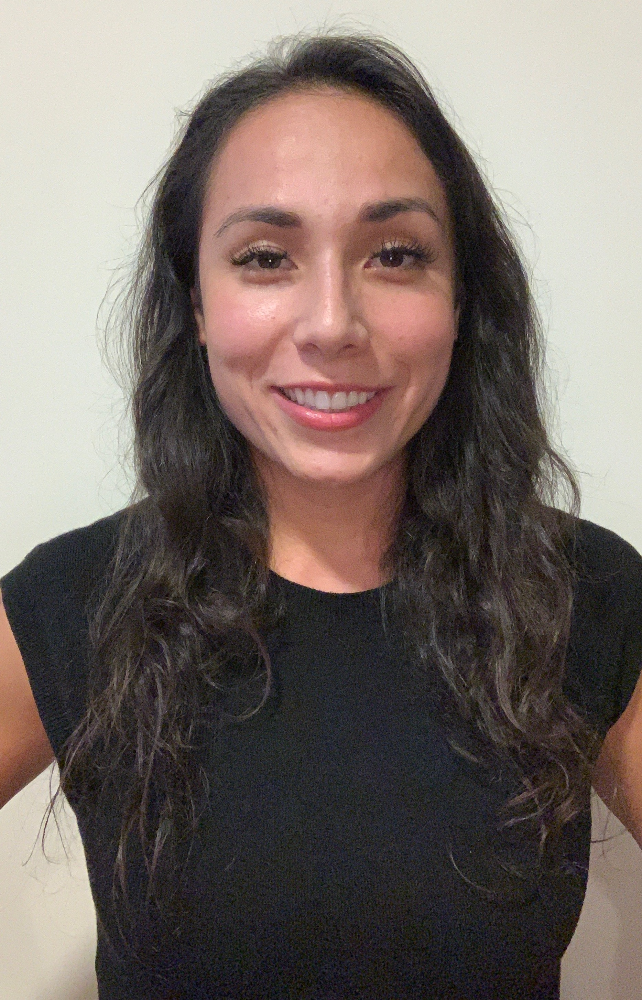
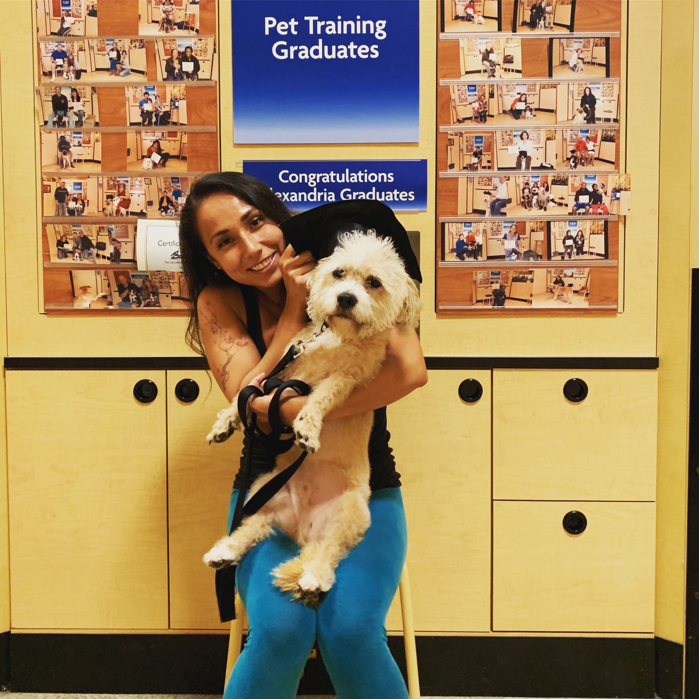

About Me
 
I was born in New Jersey and raised both in NJ and Tokyo, Japan. I studied Journalism for undergrad at Brooklyn College and earned a Bachelor’s degree. I then started working retail at Apple then transitioned into technical support at Apple, where my interest grew for technology. I knew I wanted to pursue a career in technology and started on my Master’s degree at Marymount University for Cybersecurity and moved to Alexandria, VA, with my Yorki-poo, Baxter.
While attending school, I became a Systems Administrator and soon found that a Systems Administrator was not something I wanted to be. I found the GWU Coding Bootcamp online and decided to take this step towards becoming a web developer!